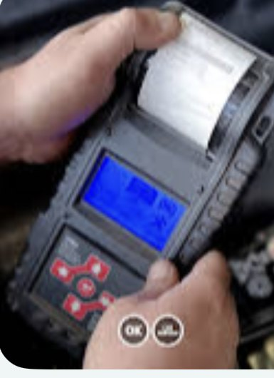

Inspektion & Wartung
Inspektion nach Herstellervorgaben – mit Original- oder gleichwertigen Teilen, damit die Garantie erhalten bleibt.
- Wartung nach Serviceplan
- Sicht- und Funktionsprüfung
- Service-Intervall dokumentiert
Start / Leistungen
Reparaturen aller Art, Inspektion nach Herstellervorgaben, HU nach § 29, Karosserie und Lack, Autoglas und die komplette Unfallabwicklung – alles an einem Standort in Hagen.
Wir arbeiten markenübergreifend. Wenn etwas nicht in unsere Halle passt – etwa eine Spezialabnahme – sagen wir das offen und nennen Ihnen jemanden, der es kann.
Inspektion nach Herstellervorgaben – mit Original- oder gleichwertigen Teilen, damit die Garantie erhalten bleibt.
Hauptuntersuchung bei uns im Haus. Wir prüfen vorab, bringen Mängel in Ordnung und melden das Fahrzeug zur Abnahme an.
Motordiagnose per Auslesegerät und Messung – erst suchen, dann schrauben. Sie erfahren vorher, was es kostet.
Beläge, Scheiben, Leitungen, Handbremse. Sicherheitsrelevant – deshalb ohne Kompromiss beim Material.
Reparatur von Lenkungs- und Fahrwerksteilen: Stoßdämpfer, Querlenker, Spurstangen, Federn.
Getriebearbeiten am Schalt- und Automatikgetriebe – von der Diagnose bis zur Instandsetzung.
Startprobleme, Beleuchtung, Sensorik, Kabelbaum. Batterie und Lichtmaschine prüfen wir kostenlos mit.
Klimaservice mit Desinfektion, Dichtheitsprüfung und Befüllung – für R134a und R1234yf.
Reifen- und Räderservice: Wechsel, Montage, Wuchten, Einlagerung – zur Saison auch kurzfristig.
Von der Delle bis zum Blechschaden. Instandsetzung und Lackierung in der eigenen Halle.
Steinschlag reparieren statt Scheibe tauschen, wenn es der Schaden zulässt. Sonst Austausch inklusive Kalibrierung.
Komplette Unfallabwicklung von A bis Z: Gutachter, Versicherung, Reparatur, Terminplanung – wir übernehmen den Schriftkram.
Ölservice mit der Freigabe, die Ihr Motor braucht – dazu Luft-, Innenraum- und Kraftstofffilter.
Schutz gegen Streusalz und Feuchtigkeit – besonders sinnvoll bei Fahrzeugen, die noch lange halten sollen.
Beschreiben Sie am Telefon, was das Auto macht – wir sagen Ihnen, ob wir es machen können.
02331 3762876
Batterie- und Ladetest„Wird schon die Batterie sein“ ist keine Diagnose. Wir prüfen Batterie, Lichtmaschine und Ladeverhalten mit dem Testgerät und drucken das Ergebnis aus – dann wissen Sie, ob ein neuer Akku wirklich nötig ist oder ob der Fehler woanders sitzt.
Ein Unfall bedeutet meistens mehr Papierkram als Reparatur. Wir übernehmen den Teil, der nervt: Gutachter beauftragen, Schaden bei der Versicherung melden, Ersatzteile bestellen, Termine koordinieren. Sie bekommen den Wagen fertig zurück.
Die HU nach § 29 nimmt eine amtlich anerkannte Prüforganisation ab. Wir prüfen Ihr Fahrzeug vorher durch, beheben Mängel und machen den Termin – Sie kommen einmal her, nicht zweimal.
Wir warten nach Herstellervorgaben und dokumentieren den Service. Bei Neuwagen bleibt die Herstellergarantie damit erhalten – auch wenn Sie nicht zur Vertragswerkstatt fahren.
Rufen Sie an und beschreiben Sie einfach, was das Auto macht. Geräusch, Warnleuchte, Verhalten – das reicht uns fürs Erste.
Am schnellsten geht es am Telefon – wir sagen Ihnen direkt, wann wir Zeit haben und was uns die Sache kosten dürfte.